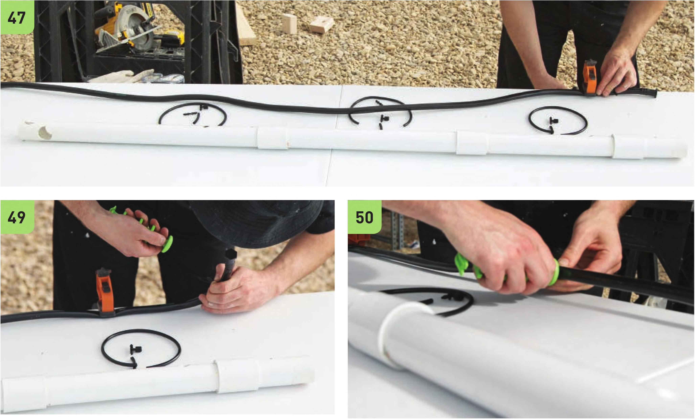

42 Check to see if V2" drainage tubes from all three Levels can be inserted into the PVC main Line. If not, shorten segments in the main PVC line until all V2" drainage tubes match with their corresponding holes in the PVC main line. The PVC couplings can create gaps (sometimes big ones) that increase the total length of the pipe, throwing off the previous measurements. 43 Mark the top of the 2 x 4" wood crossbeam on the 1 V2" PVC pipe. 44 Re move the top PVC pipe segment and cut along the mark made in step 43. This is to prevent the PVC pipe from sticking out high above the top wood crossbeam. 45 Move the PVC mainline to a flat service. Gather the VC vinyl tubing, V2" vinyl tubing, V2" stopper, VC double-barbed connectors, VC shutoff valves, irrigation line hole punch, and scissors. 46 Cut three 10" segments and three 2" segments of the VC vinyl tubing. 47 Place the V2" vinyl tubing next to the PVC main line. It may be helpful to use clamps to hold the line straight. 48 I nsert the V2" stopper into the end of the V2" vinyl tube near the top of the PVC main line. 49 Begin poking holes into the V2" vinyl tubing with the irrigation line hole punch. Place holes adjacent to the VC holes drilled into the PVC main line. 50 I nsert VC double-barbed connectors into the three holes in the V2" vinyl tubing created in step 49. HYDROPONIC GROWING SYSTEMS 131
